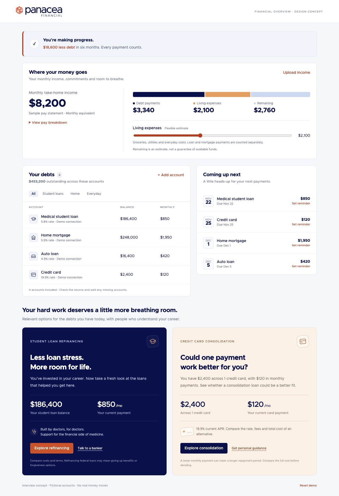

Clarity that reduces pressure.
Make it easier to understand obligations, see progress and decide what needs attention.
PRODUCT DESIGN EXERCISE · MIA ZHOU
Helping early-career doctors understand their debt and take a useful next step in the small moments they have.
Where am I?My debts, balances and monthly commitments.
What’s coming up?What is due, and when.
What can I do next?One manageable action, with clear tradeoffs.
Make it easier to understand obligations, see progress and decide what needs attention.
Managing several types of debt alongside demanding work schedules and everyday life.
Keep setup light, information scannable and the next action easy to find.
These notes come from our exercise and my reflection afterward. They are working hypotheses, not validated research findings.
Different loans create a fragmented picture of balances, rates and monthly payments.
Limited time makes an overview useful only if it is easy to understand and quick to maintain.
Before we can simplify financial decisions, we need a reliable way to get the underlying information.
Trust and accessibility are foundations throughout: explain data sources, show uncertainty and keep users in control.
Onboarding is part of the core experience. A useful dashboard depends on information the doctor can connect, add or review with confidence.
Connect supported accounts or add one debt manually.
Confirm imported amounts and pay-statement deductions.
See a partial overview now. Fill in the rest later.
To validate next: provider coverage, missing or stale data, and whether doctors can reach a useful overview with minimal effort.
I started with two simple directions, explored a fuller dashboard, then came back to the essentials. The final prototype brings that learning together.

Two initial directions: understand what I owe, or explore a repayment scenario.
View the first sketches
A richer dashboard connected the data, but added too much to scan at first.
View the broader dashboard
One main page. Clear progress, simple income upload, debt details and relevant next steps.
View final prototype